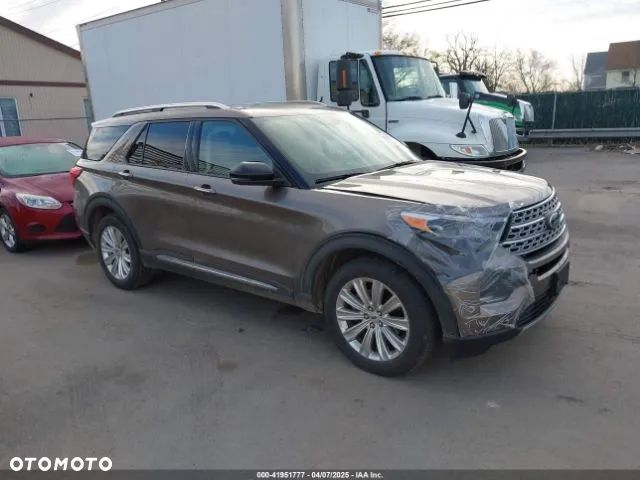
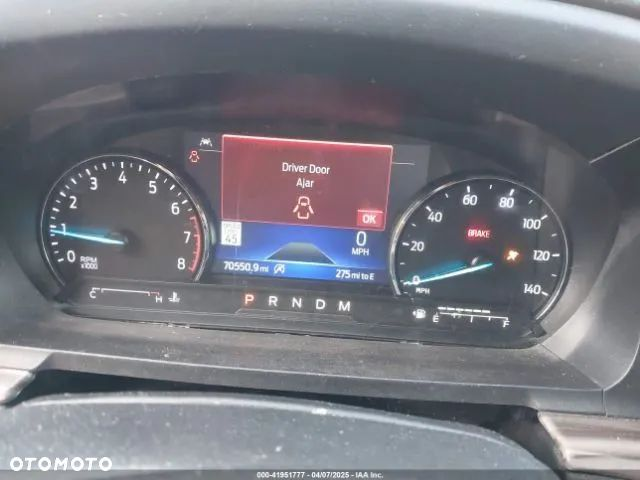
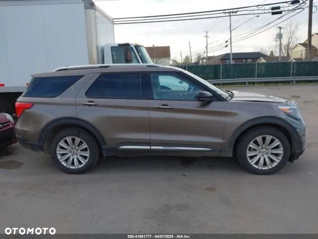

Ford Explorer Limited 2.3 AWD, kupiony po delikatnej kolizji od firmy ubezpieczeniowej Erie Insurance.
Auto obecnie w drodze do kraju.
Cena za auto po wszystkich opłatach (cło, VAT, akcyza), nie naprawione, w stanie jak na zdjęciach.
W drodze do Polski także Grand Cherokee 2019 Limited, Grand Cherokee Limited 2016, Explorer Platinium 2018, Durango SXT 2016, Dodge Durango GT 2019, Escalade Premium Luxury 2018.
Opcje auta:
**Ford EXPLORER 2021 - Limited 4WD**
* Rozstaw osi: 119 cali (ok. 302 cm)
* Silnik: 2.3L EcoBoost I-4
* Skrzynia biegów: 10-stopniowa automatyczna
* Kolor zewnętrzny: Stone Gray Metallic (metaliczny szary)
* Wnętrze: Skórzana tapicerka w kolorze Sandstone (piaskowy)
## Wyposażenie standardowe (wliczone w cenę podstawową):
### Zewnętrzne
* Podwójne chromowane końcówki układu wydechowego
* Wlew paliwa Easy Fuel® bez korka
* Reflektory - automatyczne LED
* Oświetlenie LED Signature
* Listwy ochronne na progach
* Tylne drzwi typu liftgate (podnoszone elektrycznie)
* Szyba tylna - ogrzewana
* Tylna wycieraczka ze spryskiwaczem
* Relingi dachowe w kolorze srebrnym
* Tylne światła LED i przeciwmgielne
* System kontroli przyczepy (Trailer Sway Control)
* Wycieraczki przednie z czujnikiem deszczu
### Wnętrze
* Elektryczne szyby przednie i tylne (podnoszenie/opuszczanie)
* Podgrzewane fotele w drugim rzędzie
* Oświetlenie wnętrza typu ambient
* Wewnętrzne lusterko z funkcją automatycznego przyciemniania
* Homelink® - uniwersalny pilot do bram garażowych
* Podgrzewana kierownica pokryta skórą
* Rolety przeciwsłoneczne w drugim rzędzie
* Kierownica z manualną regulacją pochylenia/wysunięcia
* Dźwignia zmiany biegów pokryta skórą
* 3-strefowa elektroniczna automatyczna kontrola temperatury
* USB typu A i typu C (1. i 2. rząd)
### Funkcjonalność
* Kamera 360 stopni
* 4-drzwiowy inteligentny dostęp z funkcją blokady/odblokowania drzwi z przyciskiem uruchamiania silnika
* System audio B\&O™ z 12 głośnikami
* Ford Co-Pilot360™ Assist+ (wspomaganie kierowcy)
* Adaptacyjny tempomat z funkcją Stop-and-Go
* Hotspot Wi-Fi z systemem telematyki FordPass Connect™
* Elektrycznie sterowane drzwi bagażnika
* Pilot zdalnego uruchamiania silnika
* SecuriCode™ - bezkluczykowy dostęp z kodem
* System kontroli stabilności (AdvanceTrac® z RSC®)
* 8-calowy ekran dotykowy SYNC® 3
* System kontroli trakcji (Voice-Activated Navigation)
* Panel ładowania bezprzewodowego
### Bezpieczeństwo
* Poduszki powietrzne AdvanceTrac® z RSC®
* Poduszka kolanowa kierowcy/pasażera
* Poduszki powietrzne boczne i kurtyny powietrzne
* Monitorowanie martwego pola (BLIS®)
* Ostrzeżenie przed kolizją
* LATCH - uchwyty ISOFIX
* Czujniki ciśnienia powietrza w oponach
* Osobisty system bezpieczeństwa (Personal Safety System™)
* Alarm SOS™ powypadkowy
---
## Opcjonalne wyposażenie (z dopłatą):
* Grupa wyposażenia 301A: 700,00 USD
* Opony P255/55R20 A/S BSW: bez dopłaty
* Rabat regionalny 4WD: bez dopłaty
* Standard emisji dla 50 stanów USA: bez dopłaty
* Dwupanelowy panoramiczny szyberdach: 1 695,00 USD
* Pakiet holowania klasy III: 545,00 USD
* Aluminiowe felgi 20" z 10 ramionami: 595,00 USD
* Przedni uchwyt na tablicę rejestracyjną: bez dopłaty
---
## Cena końcowa:
* Cena bazowa: 47 255,00 USD
* Opcje dodatkowe: 3 535,00 USD
* Łączna cena (pojazd + opcje): 50 790,00 USD
* Koszt dostawy: 1 245,00 USD
**Cena całkowita przed zniżkami:** 52 035,00 USD
**Rabat regionalny 4WD:** -300,00 USD
**Łączna oszczędność:** 300,00 USD
### Cena końcowa pojazdu (MSRP):
**51 735,00 USD**
**Specjalne zamówienie (SPECIAL ORDER)**
---
*Informacja dodatkowa: Podana cena nie obejmuje lokalnych podatków i opłat administracyjnych. Dodatkowe wyposażenie instalowane przez dealera nie zostało uwzględnione w tej cenie.*
